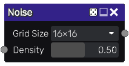

Noise node¶
The Noise node outputs a randomly generated black and white texture.
Inputs¶
The Noise node does not accept any input.

Parameters¶
The Noise node accepts the following parameters:
- Grid size is the number of rows and columns in the texture.
- Density is the likelihood for each cell to be white.
Notes¶
As with all random nodes, the seed is held by the node’s position, so moving the node in the graph will modify the texture, and the outputs will remain the same if its position and parameters are not changed.
Although this node has a grid size, it generates a resolution independant texture.